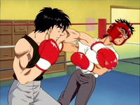

Hajime no Ippo
 De: La Frikipedia, la enciclopedia extremadamente seria.
De: La Frikipedia, la enciclopedia extremadamente seria.
| De la serie anime para todos:
|
| Hajime no Ippo
|

|
| Este es el verdadero protagonista, pero cuando pasaron el manga al anime lo cambiaron por el hipopótamo
|
|
| Género:
|
(Yaoi) Deportes
|
| Episodios:
|
72 la primera temporada y 26 la segunda. El manga se va por mil y pico...
|
| Autor del manga:
|
Mike Tyson George Morikawa
|
| Publicación:
|
1900etc...
|
| Publicado en:
|
Japón, Gimnasios y Bares gay
|
| Director del anime:
|
Mohamed Ali
|
| Transmitido en:
|
ESPN
|
| Ovas:
|
1
|
| Películas:
|
1
|
| Notas
|
Pasan todo el día follando entrenando, y por eso no estudian (Aunque eso no es tan malo).
|
«Niño, si agarras 10 hojas del árbol antes de que se caigan te dejare ser boxeador»
~ Takamura hablando con Ippo despues de verse la saga chunin de Naruto completa
«¡¡Mil años de muerte!»
~ Aoki metiendole los dedos por el culo a Ippo despues de ver el capitulo de los cascabeles de Naruto
«¡Aoki, Queremos ramen!»
~ Los del gimnasio despues de ver que comen ramen en Naruto
«Creo que he visto algunas cosas de esta serie en otro sitio»
~ Naruto al verse unos cuantos capitulos de esta serie
«No es cierto ¡Dempsey roll no jutsu!»
~ Ippo respondiendole a Naruto
Hajime no ippopotamo (o Espiritu de Lucha para los entendidos) es un anime/manga sobre el boxeo y el abuso de esteroides. La historia tiene una segunda temporada despues de la ova y la pelicula que se llama Hajime no ippo Shippuden New Challenger, que es la misma paja que la primera, solo que aqui Ippo no hace mucho, y Takamura tiene su pelea por el Titulo Mundial de Tetris. Después una tercera en la cual hacen de caníbales y se pelean por águilas y halcones.
Historia
La historia va de un chico que era muy debil llamado Rocky Makunouchi Ippo, este era siempre golpeado por unos chicos de su escuela por ser debil y oler a mierda pescado, ya que trabaja recolectando mierda en una pescaderia con su madre. Un día despues de tomar hasta estar borracho ser golpeado, un boxeador que lo estaba viendo decidio ayudarlo, y le dijo que si queria ser boxeador tenia que pegarle a un arbol y recoger 10 hojas antes de que cayeran al suelo (Sí, claro...), entonces con ayuda del entrenamiento diario drogas y un poco de montaje Ippo agarro las 10 hojas y entró al gimnasio con el pervertido Takamura, el macho Kimura que trabaja en una floreria, el Pajero Aoki y el entrenador Mike Tyson Kamogawa.
Personajes
Principales
Este es el duro entrenamiento del gimnasio. También es doloroso
- Ippo Makunouichi: Este es el protagonista del anime, (en el manga es Rocky), el típico debilucho que no hace nada y despues manda a todos a tomar por culo. En su escuela no era muy tratado, más bien, es el tipico marginado, y siempre era golpeado por 3 tipos de su escuela. Un día lo agarraron bajo un puente y lo
violaron para despues hacerlo tragar mierda de perro y despues escuchar música de Don Omar golpearon por oler a mierda pescado, ya que trabaja en la pescaderia con su madre, y por casualidad (lo raro en un anime), lo ayudó un tipo feo de un gimnasio de boxeo. Desde ahi Ippopotamo se hace boxeador y pelea con muchos tipos con retraso mental, adicción a las drogas, uso de esteroides, etc. A lo largo de la serie aprende tecnicas para dejar al enemigo KO a los oponentes, como el golpe al higado, golpe de la gasolina gazzela y el dempsey california roll
El mal esta dentro de este oso, se nota en sus ojos de asesino
- Mamoru Takamura: Este es el más fuerte y el más cabron de la serie, tiene una abundante colecctión de hentai en su cuarto, y se lleva 10 revistas todos los días al gimnasio para "relajarse" un rato. Kakamura no ha perdido todavia, le ganó a Brian Hawk por el titulo del mejor
jugador de tetris boxeador de su categoría. Se la pasa todo el día midiendole el pene a Ippo y a veces a Aoki, lo que te hace pensar que es gay, pero también que está con una mujer quiere jugar a mamá y papá lo más pronto posible. También le quitó el titulo mundial de acosador a Jiraiya. Se ha dicho que un día se perdió en un bosque jugando al escondite y al parecer tuvo una pelea con un oso y lo mato, se dice que el oso que mató ha sido el más agresivo y peligroso oso de todos los tiempos (Yogi).
Mike Tyson Genji Kamogawa: El entrenador de el gimnasio Kamogawa, que les ofrece esteroides entrenamiento a cualquier idiota que no tenga nada que hacer. Nadie sabe cómo, pero al parecer cada 10 capitulos se pone más enano, el viejo tiene suerte de que no han sacado más capitulos (por ahora...), seguro padece el Síndrome de Edward Elric.
Aoki mostrando los resultados de su
masturbacion entreamiento
Ippo
potamo mostrando sus resultados
- Masaru Aoki: el más pajero de la serie, se la pasa todo el día agarrandose los huevos desde su adolecencia, también es el mejor amigo de Kimura. Se le dice el Power Ranger de la serie tambíén, ya que controla puro mounstruo, como su actual novia, mas fea que una patada en las bolas el día del padre. Cuando pelea se nota lo inteligente que es, como el feroz ataque "mira allá", que distrae al enemigo señalando a un punto exacto del público para que éste vea a otro lado y... ¡ZAZ. en toa la jeta!; y el golpe de la rana, que consite en agacharse para distraer al enemigo, y cuando baje la mirada... ¡ZAZ, en toa la jeta!; y por ultimo pero no menos importante, el doble golpe, que consite en un momento exacto en que el enemigo retire el puño con que haya atacado y con el que se defienda lo mueva a un lado, concentra todas sus fuerzas en sus 2 brazos y en el momento exacto... ¡ZAZ! ¡en toa la jeta!.
- Tatsuya Kimura: el más aburrido de los boxeadores. Su estilo de pelea y su peinado son demasiado... corrientes, así que para hacer su vida más interesante decide entrenar y tomar bebidas "energizantes" con Aoki y Takamura. También es amigo de Ippo.
Secundarios
Dempsey Roll no Jutsu a su minima potencia.
- Kumi Mashiba: novia de Ippo, aunque éste no lo sepa. Quiere ligar con Ippo, quien no entiende, y sólo se quedan como amigos. Le excita el gran
miembro puño de Ippo, que es lo único que la atrae de el. Tiene un hermano deforme feo (lo tachado suena mejor) que le espanta todos los novios, excepto a Ippo, ya que éste le habia partido la cara de antemano, por lo que no se asusta tanto. Al incio de la serie era una colegiala y trabajaba de panadera (esto originó en la cabeza de Ippo fantasias con panes que lo llevaron a enamorarse de ella), luego paso a ser enfermera (esto generó aun mas fantasias sexuales).
- Madre de ippo y Umezawa: otros personajes poca cosa. La madre de Ippo se sintió triste cuando murió el padre de Ippo por no saber quien iba a estar con ella, pero cuando Ippo salio del cole se presenta un amigo de éste, Umezawa, para trabajar en la tienda de pesca, siendo su real intención
tirarsela hacer un manga de Ippo. Cuado Ippo sale a entrenar por las mañanas se escuchan gemidos por toda la casa. Luego la madre de Ippo descubre que Umezawa la estaba engañando y por eso se va, pero al poco tiempo llega Itagaki a ocupar el hueco libre (que mal sonó eso, pero asi es), con todo lo que eso implica…
- Wanpo: el perro de Ippo. Cuando Ippo y sus amigos se cansan o les entra la ansiedad, éste les lleva agua, bebidas energizantes, etc. Tambien le lleva vicodin a Gregory House.
Contrincantes
 Ippo llevando coñazo de parte de Miyata
- Ichiro Miyata: el primer rival de Ippo. Ha peleado y tragado anfetaminas desde los cinco años instigado por su padre, un boxeador que no llegó al quinto round. Quiere pelear con Ippo porque lo venció siendo novato, pero al no haberle ganado a Ryu Mashiba y estar en la pobreza decide viajar por Asia a pelear con malayos, tailandeses y coreanos, además de probar nuevas sustancias que lo ayudan a mejorar su rendimiento.
- Takeshi Sendo: la versión del Oeste de Ippo. Le decían Rocky porque es boxeador (duh) y su deseo es pelear con los más fuertes (como Goku y Kenpachi). Fuera del ring es un friki apreciado por todo su pueblo (es el matón del pueblo).
- Jason Ozuma: un negrito que pusieron en la serie para decir que los boxeadores son negros. Sus golpes son letales, pero no los usa fuera del ring porque es muy noble y porque no quiere que lo critique por ser "un negro que golpea gente".
- Ryu Mashiba: hermano mayor de Kumi Mashiba, su fealdad no tiene limites (de hecho sí, pero no trajeron un medidor al momento de escribir). Tiene brazos ultra largos para alcanzar el control cuando se cae al suelo. En sus peleas, cuando el referee mira hacia el otro lado, ingresa de manera ilegal un látigo al ring y lo usa de manera masoquista contra sus rivales.
- Eiji Date: ex campeon japonés de peso pluma, fue el único que le gano a Ippo, ya que con su golpe especial, el Tirabuzón (que es una imitacion barata de la patada giratoria pero con el brazo girandolo como taladro) le golpeó en el corazon, lo cual le daba paros cardiacos por sus sobredosis. Tiene una cicatriz horizontal en la nariz que le arde cuando presiente algo malo; después de perder 2 veces con Ricardo Martínez, se retiró y se volvió entrenador, pero le ha ido tan mal que prefiere mendigar, ya que asi gana más.
- Sanada Kazuki: ademas de boxeador es doctor, por lo que se autoreceta anfetaminas a él y a sus amigos boxeadores, además le gustan las enfermeras.
- Ricardo Martínez: Campeon mundial de peso pluma. Mexicano, tiene 30 años (extremadamente viejo, se le ha visto fuera del ring usando bastón). Se cree muy genial con su bigote y con haber defendido el titulo 7 años, jamás ser vencido en toda su carrera, pero al final, es un engreido.
- Volg Zangief: Ruso pelirrojo
adicto al vodka que viaja a japón en busca de barcos y putas dinero para ayudar a su madre polaca (Si, he descubierto su secreto). Con su ataque "colmillo blanco" (escapando del copyright) se hizo el campeón amateur, pero le rompieron los dientes y le aumentó la deuda al ser vencido por Ippopotamo y Sendo en busca del cinturón. Al perder debe devolverse al país "más feliz del mundo" y le deja los guantes de cocina a Ippo, puej no quería ir cargandolos todo el rato. Al final termina devolviéndose, pega unas hostias al protagonista y gana sueldo para irse a un Mc'donalds y tener mejor suerte (niños, el alcohol no lo soluciona todo).
¿Sabias que...
- Las poleras de Ippo son reductoras de musculos?
- Que en realidad tiene Kriptonita?
- Que los guantes tienen inyectado mercurio?
- Que el viento que se ve en la serie son puros efectos especiales?
- Que lo anterior no es posible?
- Ya que el presupuesto para efecto se usó en los esteroides para los boxeadores de la serie?
- Cuando un personaje desparece en la serie y luego vuelve a aparecer, le fue mejor que cuando salía?
- Que Ryu Mashiba trabajó de espectro en las casas embrujadas sin maquillaje y despues de eso todos estaban tan asustados que no querian entrar?
Autor(es):
- Kevrochi
- Ricardoxxxlo
- Harry El del Pote
- Younglink100x9
- Gñapero Solitario
- Drakke148
- Kridit
- Dancob
- Not so friki
- SasukeAvenger
Frikipedia 2005-2016, Licencia
GFDL 1.2 - Extraído por FrikiLeaks